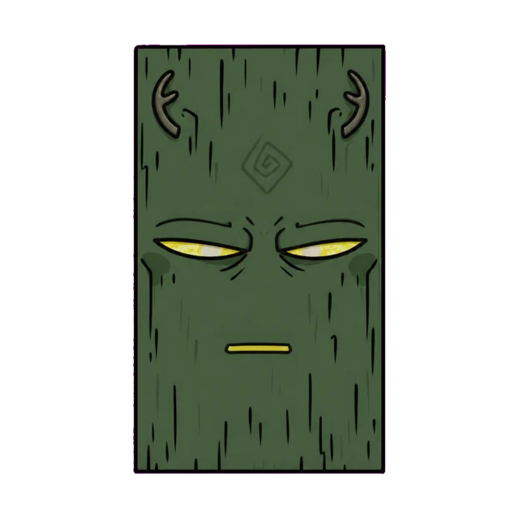

Ball is God?! Вращайте башню. Сами станьте ударом.
Хардкорная аркада с вертикальным спуском, в которой горизонтальное перетаскивание вращает башню вокруг падающего Espa. Пропускайте безопасные приземления, наносите комбо-удары и прорывайтесь сквозь мифический мир, где один неосторожный удар завершает забег.
Активное производство: десять локаций, боссы, ветвящиеся диалоги и пути кармы, меняющие правила игры.
Повернутьперетащите башню вокруг Espa
Рискпропустить три безопасных приземления
Ударпрорваться через платформу
Внутри текущей сборки
Карма меняет не только диалоги.
Светлый, нейтральный и темный пути кармы меняют поведение щитов, предупреждения об атаках, агрессию врагов и фазы боссов, так что сюжет влияет на то, как вы играете.
Статус версии В активной разработкеВсе десять диалоговых миров
Фоны диалогов для всех десяти миров, в порядке спуска от Ena до Deka.


Текущий производственный интерфейс
Выбор уровня, диалоги и экраны результатов в текущей сборке.
Это текущий порядок, в котором вы все увидите: выбор уровня, диалог, выбор на этапе, затем победа или отдельный экран поражения. Все изображения ниже используют арт из производственного проекта Unity.
Небесный маршрут выбирает сгенерированные уровни в десяти главах по 100 уровней.
Производственное меню отображает десять локаций в главах по 100 уровней и открывает сразу выбранный забег.

 201
201Диалоги проходят прямо на локации.
Портрет персонажа, арт локации и табличка говорящего собраны в одной вертикальной рамке.


Shash
Тогда продолжайте, но не думайте, что это будет легко. Вас ждут Tria, благодаря которым все предыдущее покажется сущим пустяком.
04 / Выбор этапа
Ответ становится частью спуска.
На локальных уровнях 90 и 100 специальная панель запрашивает решение «пощадить или убить», прежде чем диалог определит исход забега.

Пощадить
Убить
05 / Меню результатов
Победа ведет дальше. Поражение возвращает к тому же испытанию.
Текущая сборка имеет два отдельных состояния результата: PanelWin предлагает повтор и следующий уровень, а PanelOver оставляет одно однозначное действие повтора.
Победа · PanelWin
Спуск пройден
 Повтор
Далее
Повтор
Далее
Повтор
Далее
Персонажи диалогов
Лица встретились на пути вниз.
Ниже приведены все 25 персонажей с корректными производственными парами открытых и закрытых портретов. Наведите курсор на карточку или сфокусируйте ее, чтобы переключить выражение.





Обзор игры
Ball is God?! - хардкорная аркада о падении сквозь вращающуюся башню.
Идея
Проведите Espa вниз по божественной башне. Одна ошибка может оборвать забег, а ваши главные решения меняют правила мира.
Текущая сборка
Реализованы десять сцен локаций, процедурная генерация башен, комбо-удар, смахивание щита, конфигурации боссов, ветвящиеся диалоги, производственные меню и готовые к выражению портреты.
Аудитория
Игроки, которым нравятся сложные мобильные аркады, тайминг с риском и наградой и боссы, с сюжетом, за которым интересно следить.
Статус
Активное производство. Недавняя работа охватывает внутриигровые системы, графику миров, тестирование и то, как игра ощущается на телефоне.
Особенности
Что вы делаете в Ball is God?!
Спуск с поворотом перетаскиванием
Горизонтальное перетаскивание вращает башню вокруг автоматически падающего Espa, выравнивая просветы, опасности и безопасные платформы.
Хардкорное аркадное давление
Один незащищенный удар обрывает забег, поэтому нужно читать башню и выверять каждое движение.
Боссы и мифические миры
Десять локаций, у каждой свои боссы, ведут историю от одного мира к другому.
Выбор, меняющий правила
Милосердие, сила и карма меняют диалоги, правила щита, агрессию противника, телеграфы и фазы босса.
Цикл игрового процесса
Как играть в Ball is God?!
- Шаг 01Изучите спуск
Присматривайтесь к следующим платформам, провалам и опасностям и ищите безопасные окна по времени во время падения.
- Шаг 02Вращайте башню
Горизонтальное перетаскивание поворачивает мир вокруг Espa, выравнивая безопасную платформу или намеренный разрыв.
- Шаг 03Риск и удар
Пропустите три платформы, чтобы нанести комбо-удар, а затем прорывайте конструкции, пока щит закрывает одну смертельную ошибку.
- Шаг 04Выберите последствие
Милосердие и сила формируют карму, диалоги и правила игрового процесса, переносимые на врагов и боссов.
История / мир
Мифическая башня, где ваш выбор идет за вами вниз.
Ball is God?! начался с детского увлечения мобильными аркадами с вертикальным спуском: чтение просветов, быстрая реакция и инстинктивное выживание.
Формат мог вместить больше: боссов, персонажей с характером, сюжет и моральное напряжение. Текущий проект ведет Espa через десять локаций и галерею странных персонажей, а выбор меняет и историю, и игровой процесс.
Так цель превратилась в простую аркаду с вертикальным спуском, где давление как в битве с боссом, а последствия как в сюжетной RPG.
- Замысел
- Аркада с вращающейся башней и мифическим сюжетом
- Текущий объем миров
- Десять локаций и конфигурации боссов
- Сюжетный этап
- Полный черновик развернутого сюжета
- Состояние производства
- В активной разработке
Коротко
Простое управление перетаскиванием и сюжет, который меняет правила.
Управление вращением перетаскиванием отзывается мгновенно. Остальное дают мифические миры, боссы и выборы, меняющие игру.
В текущей сборке уже есть детерминированная генерация башен, удары с риском и наградой, поражение с одного удара, боссы, ветвящиеся диалоги и карма, меняющая игровой процесс.
- Жанр
- Сюжетная аркада с вертикальным спуском
- Целевая платформа
- iOS/Android
- Формат сессии
- Быстрые забеги, зависящие от навыка
- Студия
- WillowinWorlds
Скачать ресурсы
Материалы Ball is God?! для прессы и авторов
Превью WebP для освещения в прессе, рассмотрения издателями и ссылок на страницу магазина. Исходные файлы в полном разрешении доступны по запросу.
Бренд и персонажи
Значок игры, а также все 25 текущих персонажей, у которых есть полные портреты диалогов. Имена соответствуют ключам локализации Unity.
EspaПортрет персонажа игрока.
RevlaПортрет диалога из текущей сборки.
ShashПортрет диалога из текущей сборки.
ShushПортрет диалога из текущей сборки.
ShishПортрет диалога из текущей сборки.
GigoПортрет диалога из текущей сборки.
GogaПортрет диалога из текущей сборки.
GigaПортрет диалога из текущей сборки.
AskoldПортрет диалога из текущей сборки.
MirasПортрет диалога из текущей сборки.
HihПортрет диалога из текущей сборки.
HehПортрет диалога из текущей сборки.
HahПортрет диалога из текущей сборки.
MusyaПортрет диалога из текущей сборки.
DusyaПортрет диалога из текущей сборки.
SusyaПортрет диалога из текущей сборки.
VladusПортрет диалога из текущей сборки.
FrishaПортрет диалога из текущей сборки.
LurenПортрет диалога из текущей сборки.
KurenПортрет диалога из текущей сборки.
Don YagonПортрет диалога из текущей сборки.
LuryaПортрет диалога из текущей сборки.
KhleyaПортрет диалога из текущей сборки.
VaronПортрет диалога из текущей сборки.
WhiteПортрет диалога из текущей сборки.
Фоны меню
Текущая производственная иллюстрация, используемая системой выбора небесного уровня.
 Небесное меню
Небесное менюМиры вертикального спуска
Полный набор из десяти фонов текущих локаций по порядку от Ena до Deka.
 01 · Небесный мирФон вертикального спуска Ena.
01 · Небесный мирФон вертикального спуска Ena.
 02 · Космический мирФон вертикального спуска Dyo.
02 · Космический мирФон вертикального спуска Dyo.
 03 · Штормовой мирФон вертикального спуска Tria.
03 · Штормовой мирФон вертикального спуска Tria.
 04 · Снежный мирФон вертикального спуска Tessera.
04 · Снежный мирФон вертикального спуска Tessera.
 05 · Мир вулкановФон Pente; анимация в игре.
05 · Мир вулкановФон Pente; анимация в игре.
 06 · Мир океанаФон вертикального спуска Eksi.
06 · Мир океанаФон вертикального спуска Eksi.
 07 · Пустынный мирФон вертикального спуска Epta.
07 · Пустынный мирФон вертикального спуска Epta.
 08 · Лесной мирФон вертикального спуска Ohto.
08 · Лесной мирФон вертикального спуска Ohto.
 09 · Пещерный мирФон вертикального спуска Ennea.
09 · Пещерный мирФон вертикального спуска Ennea.
 10 · Адский мирФон вертикального спуска Deka.
10 · Адский мирФон вертикального спуска Deka.
Аркадные сюжетные фоны
Полный набор диалоговых локаций: Зал Света плюс фоны для всех десяти миров.
 00 · Зал СветаФон начального диалога.
00 · Зал СветаФон начального диалога.
 01 · Небесный диалогСюжетный фон Ena.
01 · Небесный диалогСюжетный фон Ena.
 02 · Космический диалогСюжетный фон Dyo.
02 · Космический диалогСюжетный фон Dyo.
 03 · Штормовой диалогСюжетный фон Tria.
03 · Штормовой диалогСюжетный фон Tria.
 04 · Снежный диалогСюжетный фон Tessera.
04 · Снежный диалогСюжетный фон Tessera.
 05 · Вулканический диалогСюжетный фон Pente.
05 · Вулканический диалогСюжетный фон Pente.
 06 · Океанский диалогСюжетный фон Eksi.
06 · Океанский диалогСюжетный фон Eksi.
 07 · Пустынный диалогСюжетный фон Epta.
07 · Пустынный диалогСюжетный фон Epta.
 08 · Лесной диалогСюжетный фон Ohto.
08 · Лесной диалогСюжетный фон Ohto.
 09 · Пещерный диалогСюжетный фон Ennea.
09 · Пещерный диалогСюжетный фон Ennea.
 10 · Адский диалогСюжетный фон Deka.
10 · Адский диалогСюжетный фон Deka.
Часто задаваемые вопросы Ball is God?!
Частые вопросы о Ball is God?!
Что за игра Ball is God?!
Хардкорная аркада с вертикальным спуском. Вы вращаете башню вокруг падающего Espa, пропускаете безопасные приземления, чтобы заряжать удары, и прорываетесь через мифические миры.
Как играть в Ball is God?!
Перетащите горизонтально, чтобы повернуть башню, пропустите три платформы, чтобы зарядить комбо-удар, и проведите вертикально, когда щит с перезарядкой должен поглотить смертельный удар.
Вышла ли уже Ball is God?!
Пока нет. Игра в активном производстве: внутриигровые системы, графика миров, сюжетный контент и тестирование. Публичной даты релиза нет. Целевые платформы - iOS и Android.
Чем Ball is God?! отличается от других?
В ней риск и награда создают аркадное напряжение, а десять локаций и карма меняют диалоги, врагов, предупреждения об атаках, щиты и боссов.
Кто делает Ball is God?!
WillowinWorlds, независимая студия, создающая мобильные головоломки и аркады.
Можно ли использовать пресс-материалы Ball is God?!
Да, для прессы, рассмотрения издателями и ссылок на магазины. Исходные файлы остаются закрытыми, пока вы их не запросите.
Ball is God?! Девлог
Что изменилось и когда
- Проверка мировых поверхностей и опасностей
Подача персонажей, детерминированная генерация и шипы-ловушки прошли общую проверку по внешнему виду и корректности.
- июль 2026 г.Доработка интерфейса и персонажей
Теперь готовы выбор уровней, общие кнопки действий, вертикальная подача диалогов и парные выражения лиц персонажей.
- февраль 2026 г.Обзор объема проекта
Команда завершила масштабную интеграцию сюжета и рассмотрела весь масштаб проекта: десять миров, моральный выбор, боссы и несколько концовок.
- апрель-май 2025 г.Переписывание истории и способности
Вся история была переписана, способности персонажей были улучшены, а моральные последствия стали яснее.
- август 2024 г.Начало сюжета
Команда решила, что Ball is God?! должна быть чем-то большим, чем простой аркадный спуск, и добавила мифический сюжет и идею морального выбора.
- июль 2024 г.Оригинальная концепция
Проект начался как первая игровая идея студии: быстрая вертикальная аркада о падении сквозь божественную башню.
- Текущая сборкаАркада и сюжет в одной сборке
Спуск по вращающейся башне, комбо-удар, щит со свайпом, боссы, диалоги и карма теперь работают вместе в одной сборке.